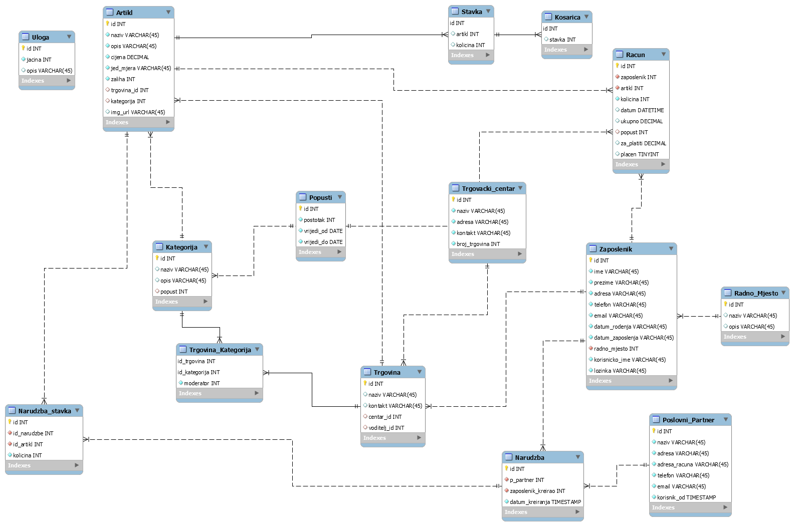
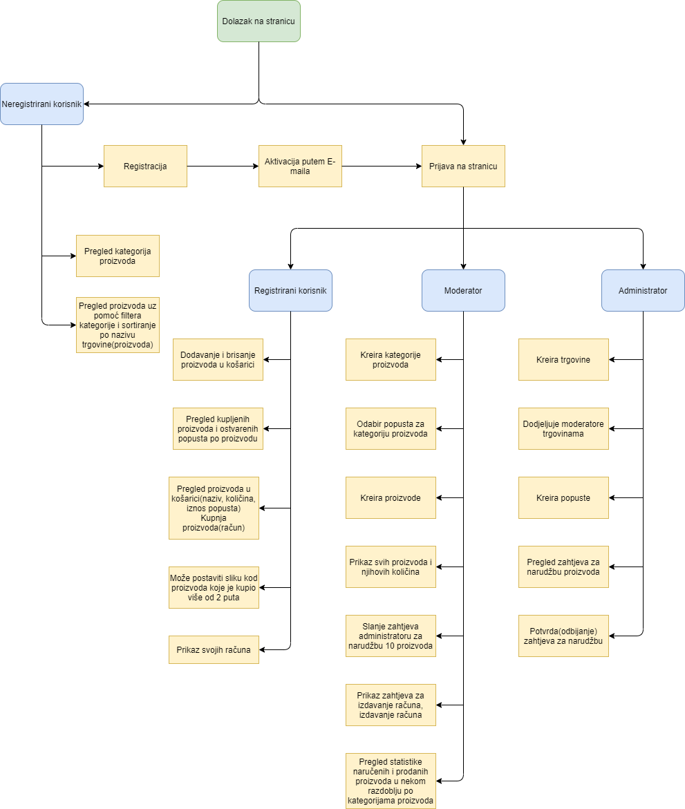

Opis projektnog zadatka:
Administrator:
- Kreira trgovina (H&M, Adidas, …) i dodjeljuje moderatore trgovini.
- Kreira popuste za određenu kategoriju.
- Vidi zahtjev za narudžbom proizvoda te istu potvrđuje ili odbija.
Moderator:
- Kreira kategorije proizvoda (npr. hlače, tenisice, voće i povrće, …) za trgovinu gdje je
moderator i može odabrati popust koji vrijedi za sve proizvode u toj kategoriji. Jednom
kreirana kategorija proizvoda ne može se više mijenjati.
- Kreira proizvode uz definiranje naziva, cijene proizvoda, opisa, količine i odabire kategoriju
proizvoda.
- Vidi svih popis proizvoda i njihovih količina i posebno su označene one gdje je količina 0.
Može poslati zahtjev administratoru za narudžbu 10 novih proizvoda.
- Vidi zahtjeve za izdavanjem računa te izdaje račun. Račun sadrži: naziv zaposlenika, nazive
proizvoda, i njihove količine, datum i vrijeme izdavanja računa, ukupan iznos, popust i
ukupan iznos za platiti.
- Pregledava statistike naručenih i prodanih proizvoda u nekom razdoblju (od-do) po kategoriji
proizvoda.
Registrirani korisnik:
- Može dodavati i brisati proizvode u košarici pri čemu mora unijeti količinu koju želi.
- Vidi popis svih proizvoda koje je kupovao i koliko popusta je ostvario na tom proizvodu.
- Može pregledati proizvode u košarici gdje vidi naziv, količinu i iznos popusta ako ga ima.
Količina se može promijeniti, a klikom na gumb kupi šalje se zahtjev moderatoru za izdavanje
računa i košarica se isprazni. Ne može se unijeti veća količina nego je trenutno dostupno.
-Može za proizvode koje kupio više od dva puta postaviti sliku. Ako želi može dati suglasnost
da se slika javno prikazuje.
- Vidi sve svoje račune i može ih označiti kao plaćenim.
Neregistrirani korisnik:
- Vidi popis kategorija proizvoda i ukupni broj korisnika koji su kupovali u trgovini.
- Odabirom kategorije proizvoda vidi sve slike proizvoda postavljenih od korisnika u obliku
galerije slika.
- Može pretraživati proizvode uz mogućnost filtriranja po kategoriji proizvoda i sortiranja po
nazivu trgovine ili nazivu proizvoda.
Opis projektnog rješenja
Na početnoj stranici može se vidjeti 5 kategorija sortiranih prema popustu od navećeg do najmanjeg.
Stranica ima navigacijski bar sa nekoliko linkova poput prijava, registracija, itd...
Možemo kliknuti na gumb da vidimo sve kategorije klikom na jednu od kategorija prikažu nam se pojedini artikli u toj kategoriji
Stranica trgovina prikazuje nam sve trgovine te nam omogućuje kreiranje trgovina i dodavanje moderatora
Stranica Upravljanje_korisnicima nam omogućuje da vidimo sve korisnike te ih možemo blokirati/odblokirati
Stranica Konfiguracija nam omogućava pomak vremena i postavljanje broja zapisa po tablici
Stranica Zahtjevi omogućava administratoru da prihvati narudžbu proizvoda koju je moderator poslao
Stranica Dnevnik nam prikazuje u tabličnom prikazu zapise o sustavu(tko je kada što napravio)
Stranica Moderator nam prikazuje popis artikala i omogućava slanje zahtjeva administratoru za narudžbom 10 za zalihu,
-stranica također ima gumb za kreiranje novog artikla.
Stranica Košarica prikazuje proizvode koje smo dodali u košaricu(naziv, popust, količina, cijena, cijena poslije popusta), korisnik može mijenjati količine
Također su uključene stranice za prijavu i registraciju koje imaju određena svojstva. Sve stranice osim stranica o autoru
i Dokumentacija su implementirane u PHP-u(Smarty), a navedene dvije su implementirane putem HTML-a. Ostale ne navedene stranice služe kao skripte
ili obrasci pomoću kojim sve navedene stranice ostvaruju svoje funkcionalnosti te su one također implementirane preko php-a.
ERA MODEL

Popis i opis skripata, mapa, navigacijski dijagram
Controller:
Administrator.php
Artikl
Dnevnik
index
kategorije
Konfiguracija
Korisnici
Kosarica
KosaricaJSON
Login
Moderator
Navigacija
odjava
Registracija
Trgovine
ZaboravljenaLozinka
CSS:
style.css -> sadrži temeljni dizajn
header:
header.php ->skripta koja sadrži smarty
img:
-> Sadrži svu multimediju vezanu za projekt
js:
jQuery.js -> skripta koja radi validaciju i prikaz podataka za određene stranice
Ostalo:
dokumentacija.html -> sadrži dokumentaciju projekta
o_autoru.html -> podaci o autoru projekta
Modeli:
ActionEnum.php
Artikl.php
Dnevnik.php
kategorija.php
Konfiguracija.php
Korisnik.php
Kosarica.php
Popust.php
Racun.php
StavkaRacun.php
VirtualnoVrijeme.php
Registracija
Trgovina.php
Zahtjev.php
Pogledi:
Artikl.tpl
Dnevnik.tpl
DodajModeratora.tpl
index.tpl
kategorija.tpl
Konfiguracija.tpl
KreirajArtikl.tpl
Kosarica.tpl
KreirajKategoriju.tpl
KreirajPopust.tpl
KreirajTrgovinu.tpl
Login.tpl
Moderator.tpl
Navigacija.tpl
Registracija.tpl
ResetPassword.tpl
Trgovina.tpl
ZaboravljenaLozinka.tpl
zahtjev.tpl
Privatno:
ispisKorisnika.php
.htaccess
.htpasswd
Provjere:
provjera_korisnickog_imena.php
uzmiBrojStranica.php
Php:
getAllUsers -> dohvaćanje svih korisnika iz baze
obradaPrijave.php -> skripta koja provjerava prijavu
obradaRegistracije.php -> skripta koja zapisuje korisnika u bazu
lib:
baza.class.php -> komunikacija s bazom

popis i opis korištenih tehnologija i alata
- Visual studio Code - korisšten za pisanje programskog koda
- FileZilla - korišten za upravljanje datotekama
- Putty - korišten za dodjelu prava
- MySql Workbench - korišten za izradu ERA modela
- phpMyAdmin - baza podataka
- MySQL shell - upravljanje bazom lokalno
- Smarty
popis i opis vanjskih (tuđih) modula/biblioteka i njihovo korištenje u skriptama i sl.
U projektnom zadatku sam koristio sljedeće biblioteke:
- baza.class.php -> sadrži funkcije za rad s bazom
- jQuery -> za validaciju na korisničkoj strani
- smarty